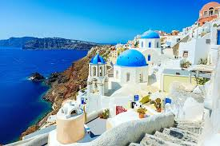
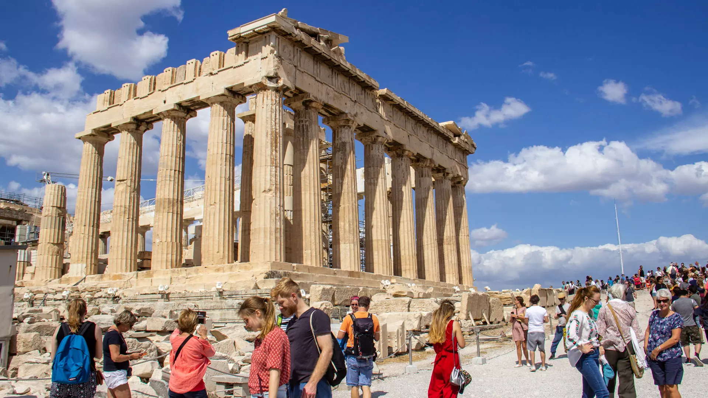
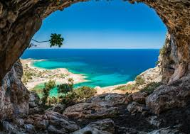

Grécia é um país localizado no sudeste da Europa, conhecido por sua rica história, cultura e influência no desenvolvimento da civilização ocidental. Considerada o berço da democracia, da filosofia e dos Jogos Olímpicos, a Grécia foi o lar de grandes pensadores como Sócrates, Platão e Aristóteles. O país possui milhares de ilhas, belas praias e monumentos históricos que atraem turistas de todo o mundo. Sua capital, Atenas, abriga importantes patrimônios históricos, como a Acrópole de Atenas. Atualmente, a Grécia destaca-se por sua cultura, gastronomia, turismo e importância histórica para a humanidade.
Saiba mais sobre a Grecia
Atenas é a capital e a maior cidade da Grécia, sendo considerada o berço da democracia e uma das cidades mais importantes da história antiga. Fundada há milhares de anos, Atenas foi o centro de grandes avanços na filosofia, nas artes, na ciência e na política, influenciando diversas civilizações ao longo do tempo. Atualmente, a cidade combina monumentos históricos, como a Acrópole de Atenas, com áreas modernas e movimentadas, atraindo milhões de turistas todos os anos. Além de seu valor histórico e cultural, Atenas é um importante centro econômico, educacional e turístico da Grécia.
Saiba mais sobre Atenas
Ilha de Creta é a maior ilha da Grécia e uma das mais importantes do Mar Mediterrâneo. Conhecida por suas belas praias, montanhas e paisagens naturais, Creta possui uma rica história que remonta à antiga Civilização Minoica, considerada uma das mais antigas da Europa. A ilha abriga importantes sítios arqueológicos, como o Palácio de Cnossos, além de cidades encantadoras, tradições culturais preservadas e uma culinária muito apreciada. Atualmente, Creta é um dos principais destinos turísticos da Grécia, atraindo visitantes interessados em história, natureza e cultura.
Saiba mais sobre Creta